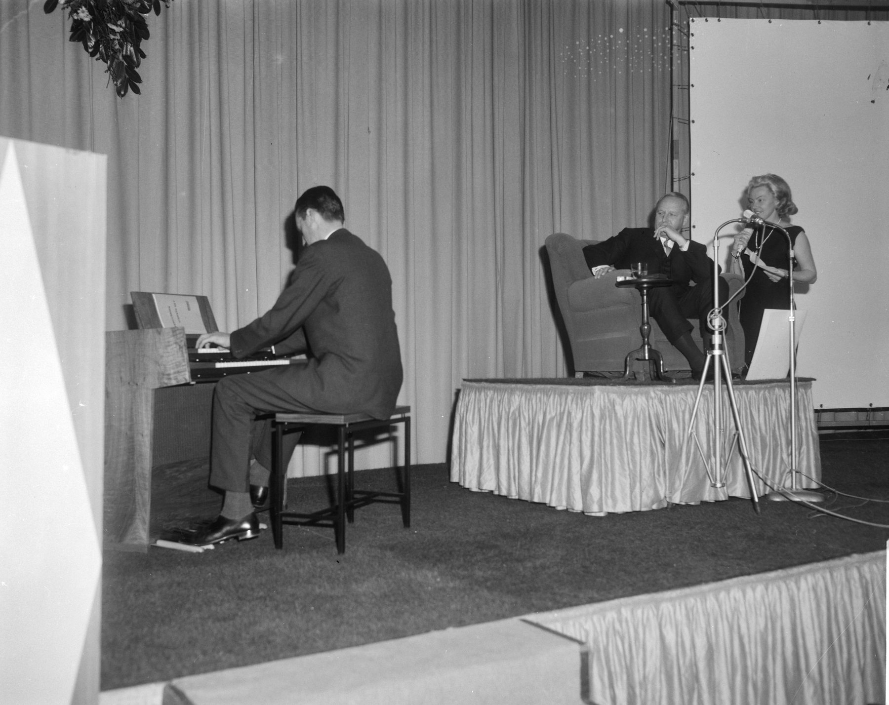
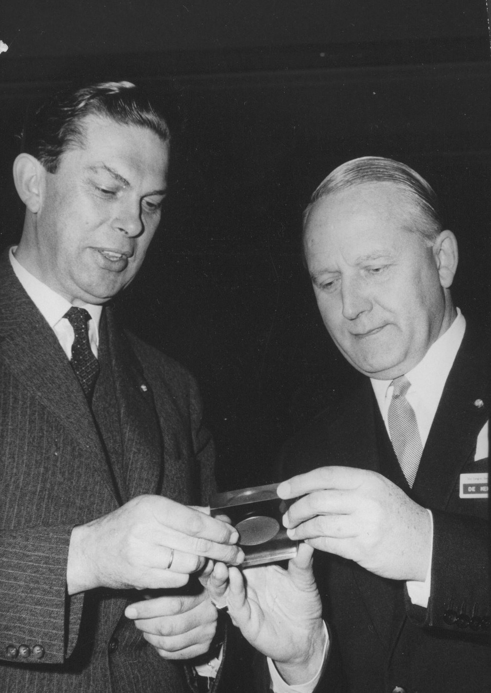
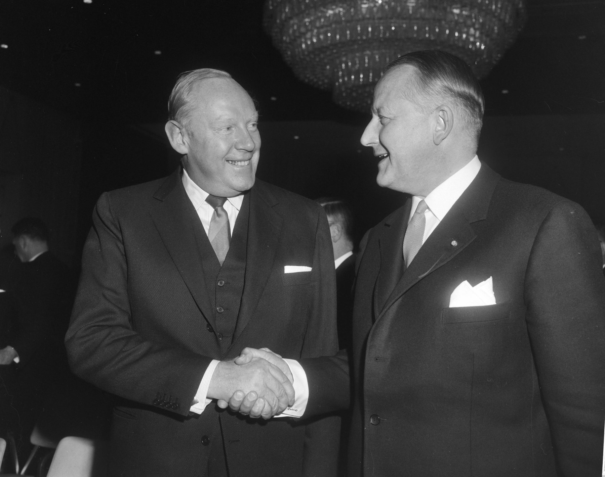

Het Genootschap hielp de regels van het vak schrijven, het onderwijs opzetten en de congressen organiseren. Het had een prins als beschermheer en hield een congres op zee. En het bleef doen waarvoor het begon: de mensen van het vak bij elkaar brengen.
Statuten 1927 · Artikel 3 · Het doel
“… de ethische, sociale, aesthetische en economische betekenis van de reclame en de erkenning daarvan te bevorderen.”
Statuten 1927 · Artikel 4 · De middelen
“… door het doen van publicaties, het houden van lezingen en congressen …”
I · 1923 tot 1945
De oprichting
1923Op 24 oktober besluit een voorlopig comité in Den Haag tot oprichting van de Vereeniging voor Reclame, mede op initiatief van Berend Knol en Machiel Wilmink. Op 15 december volgt de oprichtingsvergadering in de Industrieele Club in Amsterdam, onder leiding van H.H. Behrens. Onder de oprichters ook Han Coppens, G. Dekker, dr. H.M. Hirschfeld, Levie Levisson, H. van de Masch Spakler en André Vlaanderen.
1924Op 5 februari wordt het eerste bestuur gekozen. De vereniging telt dan 140 leden.
1927Op 12 februari gaat de vereniging verder als Genootschap voor Reclame en vraagt zij koninklijke goedkeuring van de statuten aan. In juni verschijnen de eerste GvR-maandberichten.
1928Het vakblad De Reclame wordt het officiële orgaan. Het slagzinnenregister begint.
1932Op 17 maart het eerste Nederlandse reclamecongres, Reclame in de Crisis, in Utrecht, onder leiding van voorzitter E.G. Gaarlandt, burgemeester van Gouda. Het Genootschap begint zijn eigen Officieel Orgaan.
1938Voorzitter jhr. dr. J.C. Mollerus (1936 tot 1940) opent het nieuwe tijdschrift Revue der Reclame, dat de vakbladen bundelt.
Voor 1940Willem Sandberg, later directeur van het Stedelijk, zit in het bestuur. Anton Philips en Fentener van Vlissingen zijn betrokken. Onder de vroege leden en begunstigers: Vilmos Huszár, Louis Kalff en Piet van der Hem.
1941Het Genootschap blijft actief onder voorzitter Han Coppens. In september staat het voor het eerst op de Jaarbeurs in Utrecht, in april 1942 volgt een tentoonstelling van werk van leden.
1943In april moet de Revue der Reclame op last van de bezetter stoppen.

Fig. 1 · Jhr. W. van Andringa de Kempenaer en Karin Kraaykamp, 6 januari 1966 · Foto: Joop van Bilsen / Anefo, Nationaal Archief, CC0
II · 1946 tot 1971
De prins en de congressen
1946In november het eerste congres na de oorlog, in het Indisch Instituut in Amsterdam, met voor het eerst buitenlandse sprekers. In december verschijnt de Revue der Reclame weer.
1952Op 11 september opent Prins Bernhard het vijftiende congres, in Krasnapolsky. Poppenfilmer Joop Geesink geeft hem vier poppen in uniform.
1953Jhr. Wim van Andringa de Kempenaer wordt op 6 januari voorzitter, tot januari 1966. Via hem is Prins Bernhard beschermheer van het Genootschap. De prins spreekt op congressen, stuurt telegrammen als hij er niet is, en zijn portret staat voorin de jaarverslagen.
1955Het Genootschap is medeoprichter van de Stichting Reclame Onderwijs. Een slagzinnencommissie stelt criteria op voor het register.
1957Voor zijn dertigjarig bestaan stelt het Genootschap de Gouden Tulp in. Vanaf 1959 reikt het Europese comité van de International Advertising Association die om de twee jaar uit, voor de beste reclame voor een Nederlands product in het buitenland.
1958De Kristallen Bel van het Genootschap gaat naar J.F. Tempel van Unilever, de vierde ontvanger. Daarnaast reikt het Genootschap jaarprijzen uit, onder meer in 1960, 1962 en 1965.
1961Het congres in Hilversum. In De Telegraaf vergelijkt Van Andringa de Kempenaer dat jaar reclame met medicijnen: te weinig doet niets, te veel geeft bijwerkingen.
1962Een congrescruise op de Nieuw Amsterdam, met de International Advertising Association. De prins vliegt naar Bergen en vaart mee terug naar Rotterdam.
1963Op het congres in Enschede wordt de Nederlandse Code voor het Reclamewezen gepresenteerd, aan de basis van de Code Commissie, voorloper van de Stichting Reclame Code. Datzelfde jaar begint de Willem Grollenberg-prijs, die tot 1982 bestaat.
1965
Op 21 januari opent minister Biesheuvel het 26e congres, het eerste in het nieuwe Congrescentrum van de RAI.

Fig. 2 · Voorzitter Van Andringa de Kempenaer (rechts) en minister Biesheuvel met een herdenkingspenning, bij de opening van het 26e congres in de RAI, 21 januari 1965 · Foto: Hugo van Gelderen / Anefo, Nationaal Archief (collectie Elsevier), CC0
1966
In januari neemt Van Andringa de Kempenaer na dertien jaar afscheid als voorzitter en krijgt hij de Willem Grollenberg-prijs. Dr. J.P. Ton van Heineken volgt hem op. In oktober het 27e congres, in De Doelen in Rotterdam.

Fig. 3 · De nieuwe voorzitter dr. J.P. Ton (links) en zijn voorganger jhr. W. van Andringa de Kempenaer, 6 januari 1966 · Foto: Joop van Bilsen / Anefo, Nationaal Archief, CC0
Jaren 60Onder Van Andringa de Kempenaer, vanaf 1966 onder J.P. Ton, en met directeur Jan Klein groeien de congressen uit tot meerdaagse bijeenkomsten van het hele vak.
III · 1972 tot 1999
Regels en Hanen
1972Bert de Vries wordt voorzitter, tot 1983. Met BVA, NDP, NOTU, STER en VEA richt het Genootschap de Nederlandse Reclame Stichting op, die de meeste taken overneemt. Op 16 oktober opent erevoorzitter Van Andringa de Kempenaer het pand. In december verschijnt de laatste Revue der Reclame.
1979Het slagzinnenregister wordt grondig herzien.
1988De Reclameraad gaat op in de Stichting Reclame Code.
1992De oudste Jonge Haan op de erelijst: Ton Schoonderbeek. Later volgen onder anderen Jort Kelder en Mary Hoogerbrugge.
1993Het Genootschap stelt de bijzondere leerstoel Commerciële Communicatie aan de Universiteit van Amsterdam in. Giep Franzen is de eerste hoogleraar.
IV · 2000 tot nu
Het Genootschap
2001De eerste Coq de Grand Honneur op de erelijst, voor Rob Benjamens. In 2011 krijgt hij hem opnieuw. De Hanen worden in deze jaren in januari uitgereikt, op de nieuwjaarsreceptie.
2002Het Genootschap viert zijn 75-jarig jubileum, geteld vanaf de naam van 1927, en telt ruim 800 leden. Met BVA en VEA gaat het samenwerken in een Centrum voor Commerciële Communicatie. Op de nieuwjaarsreceptie krijgt Freddy Heineken postuum de Coq de Grand Honneur.
2005Het historisch archief, ruim vijftien meter uit 1927 tot circa 1990, wordt in het najaar openbaar via ReclameArsenaal en het IISG.
2006Voor het eerst reikt het Centrum voor Commerciële Communicatie de Hanen uit, op zijn nieuwjaarsreceptie. Dat blijft zo tot en met 2009.
2009In maart heft het bestuur de verenigingsstructuur op. Voortaan brengt het Genootschap de top van het vak op uitnodiging bijeen. Het slagzinnenregister krijgt een eigen stichting. Dit is het begin van het besloten Genootschap van nu.
2015Ruud Polman neemt na twaalf jaar afscheid als voorzitter. Willem van der Schoot volgt hem op.
2020Jip Samhoud volgt Linda Boks op als voorzitter, de jongste in de geschiedenis van het Genootschap.
2021Op 4 oktober het Hanendiner. Mary Hoogerbrugge krijgt de Coq de Grand Honneur en is daarmee de enige die alle drie de Hanen won. In 2022 is er geen editie, de volgende is in februari 2023.
2023Het honderdjarig Hanendiner. Paul Manuel krijgt de Coq de Grand Honneur.
2026Het Hanendiner in de studio van Ziggo Sport, met twee Coqs de Grand Honneur. In het najaar gaan de genoten op fieldtrip naar de Dutch Design Week in Eindhoven.
2026Na bijna een eeuw neemt het slagzinnenregister geen nieuwe inzendingen meer aan. In 2028, twee jaar na de laatste inzending, wordt het register slapend.
NuDe missie: het bevorderen van de vriendschap in het reclamevak.
Samen met de International Advertising Association hield het Genootschap zijn congres aan boord van de Nieuw Amsterdam. Beschermheer Prins Bernhard vloog naar Bergen in Noorwegen en voer met het gezelschap mee terug naar Rotterdam.